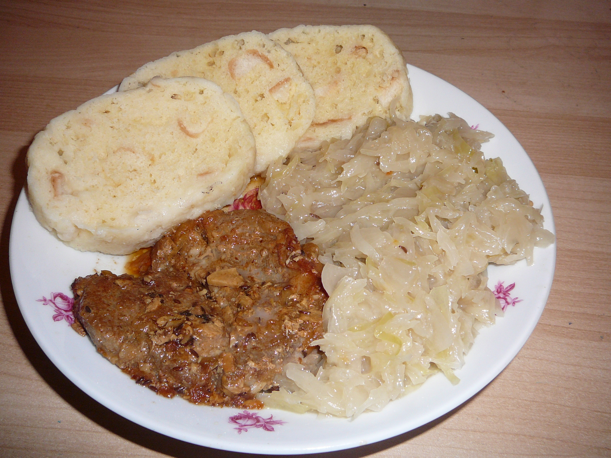

Knedlo Vepřo Zelo

Description: Knedlo vepřo zelo is traditional Czech food that you shuld
serve with glass of beer and watch football when you eat it
Ingredients:
- 500g of pork meat
- 5 pieces of garlic
- salt and pepper
- 1 onion
- 50g of pork lard
- cabbage
- 70g of bacon
Setup:
- Setup oven temperature to 170 °C.
- Mix meat with salt, pepper and garlic
-
Make the meat in the oven until its brittle, mix it with warm water
- add cabagge with bacon and cook it for another 15 minutes
Go Back